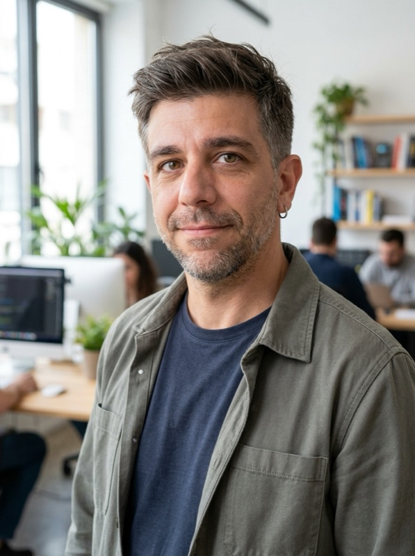

CFGS Enseñanza y Animación Sociodeportiva (TSEAS)
Ciclo Formativo de Grado Superior
Técnico Superior en Enseñanza y Animación Sociodeportiva, de la familia profesional de Actividades Físicas y Deportivas.
Hola, soy
Me estoy formando para crear aplicaciones web completas, desde la interfaz que ve el usuario hasta la lógica y los datos que hay detrás. Aquí encontrarás quién soy, en qué trabajo y cómo contactar conmigo.

Un poco de quién soy y hacia dónde voy
Me llamo Jose Pascual Martín y estudio el Ciclo Formativo de Grado Superior en Desarrollo de Aplicaciones Web (DAW) en modalidad semipresencial, dentro de la Formación Profesional de la Comunitat Valenciana. Compagino los estudios con mi trabajo como técnico de actividades acuáticas en el Ayuntamiento de Sagunto, algo que me ha enseñado a organizarme bien y a ser constante.
Lo que más me gusta de la programación es ver cómo una idea se convierte en algo que funciona y que otras personas pueden usar. Disfruto especialmente con el desarrollo web: maquetar con HTML y CSS, resolver problemas con Java y entender cómo se organiza un proyecto con metodologías ágiles.
Mi objetivo profesional es trabajar como desarrollador web full stack, participando en proyectos reales dentro de un equipo, y seguir aprendiendo tecnologías como JavaScript, bases de datos , frameworks modernos y la integracion de la IA en proyectos. Este portfolio es el primer paso: un lugar donde ir dejando constancia de lo que aprendo.
Mi recorrido académico y profesional
Ciclo Formativo de Grado Superior
Técnico Superior en Enseñanza y Animación Sociodeportiva, de la familia profesional de Actividades Físicas y Deportivas.
Formación Profesional semipresencial · Comunitat Valenciana
Módulos de Programación (Java), Diseño de Interfaces Web, Proyecto Intermodular, bases de datos, entornos de desarrollo y despliegue de aplicaciones.
Primer y segundo curso
Formación en fotografía y producción audiovisual, que me aportó sensibilidad por la imagen, la composición y el diseño visual.
Universitat Politècnica de València (UPV)
Estudios técnicos centrados en la medición, la representación del terreno y el tratamiento de datos.
Ayuntamiento de Sagunto
Trabajo de forma ininterrumpida desde 2008 en el servicio municipal de actividades acuáticas.
Trabajos que he realizado durante el ciclo
Esta misma web. Sitio de una sola página maquetado desde cero con HTML semántico y CSS propio (variables, Flexbox, Grid y media queries), con menú adaptado a móvil y modo oscuro hecho con JavaScript. Publicado con GitHub Pages.
Repositorio local en el que practiqué el flujo básico de Git desde la terminal: init,
add, commit, consulta del historial con log, uso de
.gitignore y recuperación de versiones anteriores de los archivos.
Colección de programas del módulo de Programación: estructuras de control, funciones y procedimientos, arrays y estructuras de datos dinámicas. Me han servido para asentar la lógica de programación y aprender a dividir un problema en partes pequeñas.
Tablero de Trello para organizar un proyecto siguiendo metodologías ágiles: definición de listas por estado, tarjetas con tareas, etiquetas de prioridad, fechas límite y checklists, aplicando conceptos de Scrum y Kanban.
Lo que sé hacer y con lo que trabajo
¿Hablamos? Estaré encantado de responderte
josmarrod4@alu.edu.gva.es
github.com/JosePascualMR
Comunitat Valenciana, España